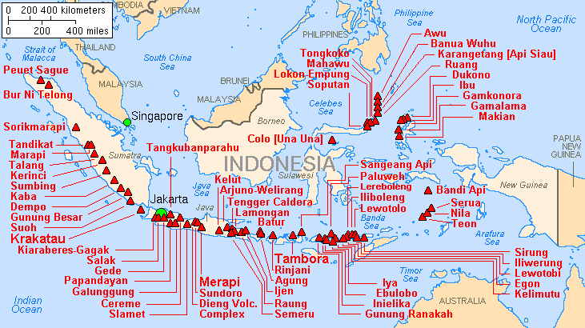

Geologi
Secara tektonik, sebagian besar wilayah Indonesia sangat tidak stabil karena lokasinya menjadi pertemuan dari beberapa lempeng tektonik, seperti lempeng Indo-Australia, Lempeng Pasifik, dan Lempeng Eurasia. Negara ini terletak di Cincin Api Pasifik sehingga memiliki banyak gunung berapi dan sering mengalami gempa bumi. Busur vulkanik berjajar mulai dari Sumatra, Jawa, Bali dan Nusa Tenggara, dan kemudian ke Kepulauan Banda di Maluku hingga ke timur laut Sulawesi. Dari sekitar 400 gunung berapi, kurang lebih 130 di antaranya masih aktif.
Sebuah letusan supervulkan pada sekitar 77.000 SM yang membentuk Danau Toba dipercaya mengakibatkan musim dingin vulkanik dan penurunan suhu dunia selama bertahun-tahun.[262] Letusan Tambora pada tahun 1815 dan letusan Krakatau pada 1883 juga termasuk letusan gunung terbesar yang tercatat sepanjang sejarah. Gempa bumi berdorongan besar yang berdampak ke Indonesia dan terjadi belum lama ini adalah gempa bumi dan tsunami Samudra Hindia 2004.